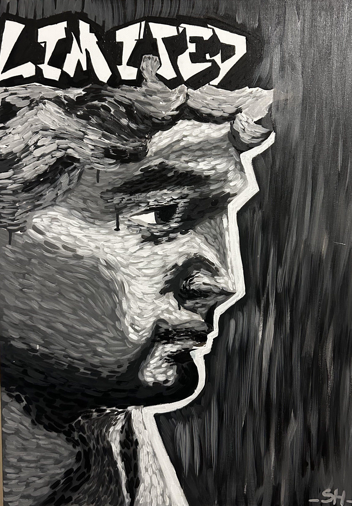

Asliceofartinyourlife
Начало
Картини
Принтове
Поръчка
Персонализирана
Стил
За мен
Контакти
0
Asliceofartinyourlife
Начало
→
Картини
→
Принтове
→
Поръчка
→
Персонализирана картина
→
Стил
→
За мен
→
Контакти
→
Вашата количка
✕
Картини
оригинални творби
Girl with a pearl earring – 20x60 cm
Divine – 50x70 cm
Pastel Veil of Love – 50 cm
Special – 30x40 cm
Vroom – 50x70 cm
Between Petal and Fruit – 50x70 cm
Love – 50x70 cm
Candy – 50x60 cm
The Little Swan's Lullaby – 10x10 cm
Break the habit – 70 cm
Orchids – 30x40 cm
Yin and yang – 50 cm
Butterflies in Bloom – 30x40 cm
In the Margins of Time – 50x70 cm
I am my own muse – 30x40 cm
Consumer Culture – 50x70 cm
Saffron – 40x50 cm
Kendrick – 30x40 cm
Armed with a smile – 40x40 cm
Wasted – 30x40 cm
Not yours never was – 50x70 cm
Reckless – 40x40 cm
ALL CAPS – 30x40 cm
Sicko – 40x40 cm
We'll never meet again – 50x70 cm
Don't look back – 40x40 cm
Call me if you get lost – 50x70 cm
Red Dots Silence – 30x40 cm
Lost call – 40x40 cm
Overload – 30x40 cm
Whimsical Forest Guardian – Totoro – 12x12 cm
The Don's Shadow – 70 cm
Golden smile – 30x40 cm
Silent skull – 12x12 cm
Magical mysterie – 40x40 cm

Limited – 50x70 cm
✕
Добави в количката